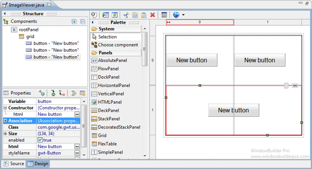
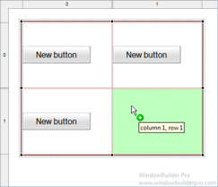
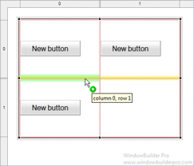
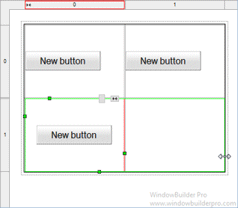
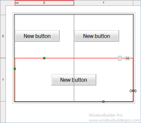
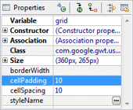
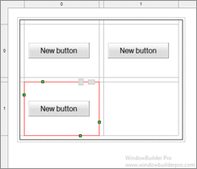
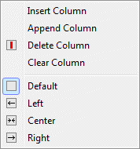

Main Features
- Select FlexTable from the Panels palette

- Graphical feedback is provided for all drop and move interactions
 
- Columns and rows may be spanned
 
- Horizontal and vertical cell padding can be specified using the Property Pane
 
- Columns and rows may be inserted, appended and deleted and the alignment of each cell set.


Graphical Feedback
- When moving a widget or adding a new widget, the current drop
point is highlighted in green